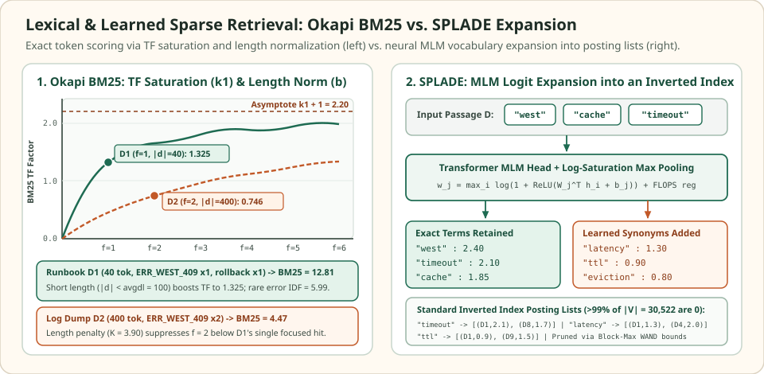

Lexical and learned sparse retrieval: score exact terms with BM25 and SPLADE
Dense vector embeddings compress an entire passage into a single fixed-width vector, smoothing away rare error codes, SKU strings, API flags, and version numbers that occurred rarely during pretraining. Sparse retrieval represents queries and documents directly in the vocabulary space $\mathbb{R}^{|V|}$—where almost every coordinate is zero—and evaluates relevance via an inverted index over exact or learned token weights.
Classical Okapi BM25 weights observed surface tokens using inverse document frequency, saturating term frequency ($k_1$), and document-length normalization ($b$). SPLADE (Sparse Lexical and Expansion Model) replaces heuristic counts with a pretrained Masked Language Model (MLM) head that projects every passage into a sparse bag of WordPiece tokens, retaining exact identifier weights while injecting learned synonyms directly into standard inverted posting lists.
Why a single hit in a short runbook beats two hits in a bloated log
N = 1,000 docs · avgdl = 100 · k1 = 1.2, b = 0.75
Suppose an on-call engineer queries $q = \text{“ERR\_WEST\_409 rollback”}$ against a $1{,}000$-document corpus ($\text{avgdl} = 100$, $k_1 = 1.2$, $b = 0.75$). In this corpus, the rare error code ERR_WEST_409 appears in only $n(\text{ERR\_WEST\_409}) = 2$ documents ($\operatorname{IDF} = 5.992$), while rollback appears in $n(\text{rollback}) = 25$ documents ($\operatorname{IDF} = 3.670$). Compare three candidate documents: a concise $40$-token runbook D1, a verbose $400$-token log dump D2, and a $40$-token paraphrased incident note D3.


Even on the single term ERR_WEST_409 alone, D1 ($f = 1$, $|d_1| = 40$) achieves a higher BM25 term factor ($1.325$) than D2 ($f = 2$, $|d_2| = 400$, term factor $0.746$) because `D2` is four times the average document length ($K(d_2) = 3.90$ vs. $K(d_1) = 0.66$). Meanwhile, D3 says “region conflict revert”; it receives a lexical BM25 score of $0.000$ due to zero token overlap, which SPLADE repairs by expanding revert onto the vocabulary dimension for rollback.
Exact Okapi BM25 scoring breakdown for query "ERR_WEST_409 rollback" (N = 1,000, avgdl = 100, k1 = 1.2, b = 0.75) vs. SPLADE expansion.
| Candidate & length | Term counts f(t, d) | Length norm K(d) | BM25 TF factor | BM25 score | SPLADE behavior |
|---|---|---|---|---|---|
| D1: Runbook (|d| = 40) | ERR_WEST_409: 1, rollback: 1 | 0.660 | 2.2 / 1.66 = 1.325 (both) | 7.942 + 4.864 = 12.806 | Retains exact code + rollback (Rank 1) |
| D2: Log dump (|d| = 400) | ERR_WEST_409: 2, rollback: 0 | 3.900 | 4.4 / 5.90 = 0.746 (code) | 4.469 + 0.000 = 4.469 | Downweights noisy repetition (Rank 2) |
| D3: Paraphrase (|d| = 40) | ERR_WEST_409: 0, rollback: 0 | 0.660 | 0.000 (zero lexical hit) | 0.000 | Expands "revert" -> "rollback" (Recovered) |
Scroll horizontally to compare the columns. Keyboard: focus the table, then use the left and right arrow keys.
Deriving Okapi BM25: IDF, saturation, and length normalization
Given a corpus of $N$ documents with average token length $\text{avgdl} = \frac{1}{N}\sum_{d=1}^N |d|$, Okapi BM25 scores a document $d$ against a tokenized query $q$ by summing the product of each query term's Robertson–Sparck Jones inverse document frequency and its length-normalized, saturated term frequency:
Here $n(t)$ is the number of documents containing term $t$, and $f(t, d)$ is the raw count of $t$ inside document $d$. Adding $1$ inside the natural logarithm ensures $\operatorname{IDF}(t) > 0$ even when a stopword appears in more than half the corpus ($n(t) > N/2$). Defining the document-specific denominator constant $K(d) = k_1\bigl(1 - b + b\,\frac{|d|}{\text{avgdl}}\bigr)$ isolates how the two hyperparameters shape the ranking curve:
| Component | Typical range | Retrieval behavior & failure mode at extremes |
|---|---|---|
| Saturation ($k_1$) | $1.2 \le k_1 \le 2.0$ | Controls how quickly repeated mentions hit diminishing returns. At $k_1 \to 0$, term frequency becomes binary presence/absence; at $k_1 \gg 2$, spammy logs repeating a token $50$ times dominate single-mention answers. |
| Length norm ($b$) | $b = 0.75$ ($b \in [0, 1]$) | Interpolates between no length penalty ($b = 0$) and full relative-length scaling ($b = 1$). When fixed-size chunking already forces $|d| \approx \text{avgdl}$ across every chunk, $1 - b + b\,|d|/\text{avgdl} \approx 1$ and $b$ has minimal effect. |
| Rarity ($\operatorname{IDF}(t)$) | $[0,\, \ln(N + 0.5)]$ | Acts as a soft AND gate: matching one rare identifier ($n(t)=2$, $\operatorname{IDF}=5.99$) contributes more than matching three common verbs ($n(t)=400$, $\operatorname{IDF}=0.92$). |
Learned sparse retrieval: SPLADE log-saturation and FLOPS regularization
BM25 only assigns non-zero weights to tokens physically present in $d$, failing whenever a query uses rollback and the passage uses revert. SPLADE resolves vocabulary mismatch without abandoning the inverted index. Given an input sequence $d = (t_1, \dots, t_{|d|})$, a Transformer encoder produces contextualized token states $(\mathbf{h}_1, \dots, \mathbf{h}_{|d|})$. SPLADE projects each state $\mathbf{h}_i \in \mathbb{R}^d$ through the pretrained Masked Language Model (MLM) prediction head $(\mathbf{v}_j, b_j)_{j=1}^{|V|}$ across the vocabulary $|V| = 30{,}522$, applies a rectified log-saturation nonlinearity, and max-pools over the sequence positions $i \in \{1, \dots, |d|\}$:
The $\operatorname{ReLU}$ enforces non-negative impact weights $w_j(d) \ge 0$ required by inverted-index pruning algorithms, while $\log(1 + \cdot)$ prevents a single dominant logit from overwhelming all other terms—playing the exact role that $k_1$ saturation plays in BM25. Relevance is simply the sparse inner product $\operatorname{score}(q, d) = \langle \mathbf{w}(q), \mathbf{w}(d) \rangle = \sum_{j \in q \cap d} w_j(q)\,w_j(d)$.
For an inverted index to remain fast, $\mathbf{w}(d)$ must be over $99\%$ zeros (typically $100$–$300$ non-zero WordPiece weights out of $30{,}522$). SPLADE enforces this during InfoNCE or margin-MSE distillation by adding the FLOPS regularizer (Paria et al., 2020), which penalizes the expected number of floating-point operations per posting-list intersection across a mini-batch of $B$ documents:
Unlike an unweighted $\ell_1$ penalty (which permits every document to activate the same high-frequency stopword dimension $j$), squaring the batch-mean activation $\bar{a}_j$ heavily penalizes vocabulary dimensions that fire across many documents in the batch—forcing the model to distribute weights across selective, high-IDF expansion terms so posting lists stay short and uniform.
Dynamic pruning with WAND and Block-Max WAND
Both BM25 and quantized SPLADE store each vocabulary term $t$ as a sorted posting list $L_t = \bigl[(d_1, W_{t, d_1}), (d_2, W_{t, d_2}), \dots\bigr]$, where $W_{t, d}$ is the term's precomputed impact score in document $d$. Exhaustively traversing every posting list for a multi-term query is unnecessary when retrieving only the top-$k$ candidates.
WAND (Weak AND, Broder et al., 2003) maintains the current $k$-th highest score in a min-heap as a dynamic threshold $\theta$, alongside each term's global upper bound $U_t = \max_{d \in L_t} W_{t, d}$. At each step, WAND sorts the query terms' current posting cursors by document ID $d_{\text{cur}}(t_1) \le d_{\text{cur}}(t_2) \le \dots$ and finds the smallest prefix pivot $p$ whose cumulative upper bounds can exceed $\theta$:
Any document ID strictly less than $d_{\text{cur}}(t_p)$ can contain at most terms $t_1, \dots, t_{p-1}$, whose combined maximum possible score is $\sum_{i=1}^{p-1} U_{t_i} \le \theta$. WAND therefore skips all cursors $t_1, \dots, t_{p-1}$ directly to $d_{\text{cur}}(t_p)$ without evaluating the intermediate documents. Block-Max WAND (Ding & Suel, 2011) sharpens this bound by partitioning each posting list into fixed-size blocks (e.g., $128$ postings) and storing a local block maximum $U_{t, \text{block}} \le U_t$, skipping entire blocks whenever a single outlier document would otherwise inflate $U_t$.
import math
# 1. Verify the exact Okapi BM25 puzzle (N = 1000, avgdl = 100, k1 = 1.2, b = 0.75)
N, avgdl, k1, b = 1000, 100.0, 1.2, 0.75
df = {"ERR_WEST_409": 2, "rollback": 25}
def bm25_idf(term):
n_t = df.get(term, 0)
return math.log(1.0 + (N - n_t + 0.5) / (n_t + 0.5))
def bm25_score(query_terms, doc_counts, doc_len):
K = k1 * (1.0 - b + b * (doc_len / avgdl))
total = 0.0
for t in query_terms:
f = doc_counts.get(t, 0)
if f > 0:
tf_sat = (f * (k1 + 1.0)) / (f + K)
total += bm25_idf(t) * tf_sat
return total
q = ["ERR_WEST_409", "rollback"]
s_d1 = bm25_score(q, {"ERR_WEST_409": 1, "rollback": 1}, doc_len=40)
s_d2 = bm25_score(q, {"ERR_WEST_409": 2, "rollback": 0}, doc_len=400)
s_d3 = bm25_score(q, {}, doc_len=40)
assert math.isclose(bm25_idf("ERR_WEST_409"), 5.992464, rel_tol=1e-5)
assert math.isclose(bm25_idf("rollback"), 3.670076, rel_tol=1e-5)
assert math.isclose(s_d1, 12.805778, rel_tol=1e-5)
assert math.isclose(s_d2, 4.468956, rel_tol=1e-5)
assert s_d3 == 0.0
# 2. Verify SPLADE log-saturation max-pooling & FLOPS regularizer
# Toy vocabulary: ["ERR_WEST_409", "rollback", "revert", "conflict", "the"]
def splade_encode(token_logits):
# token_logits: list of per-token logit vectors over |V|
vocab_size = len(token_logits[0])
return [
max(math.log(1.0 + max(0.0, row[j])) for row in token_logits)
for j in range(vocab_size)
]
def flops_penalty(batch_weights):
B = len(batch_weights)
vocab_size = len(batch_weights[0])
return sum((sum(abs(w[j]) for w in batch_weights) / B) ** 2 for j in range(vocab_size))
# Paraphrase D3 ("region conflict revert") projects a positive logit onto "rollback" (index 1)
d3_logits = [
[0.0, 1.8, 3.2, 0.4, 0.0], # token "revert" activates "rollback" (1.8) and "revert" (3.2)
[0.0, 0.2, 0.0, 4.1, 0.0], # token "conflict" activates "conflict" (4.1)
]
w_d3 = splade_encode(d3_logits)
w_q = [2.5, 1.9, 0.0, 0.0, 0.0] # query weights on ("ERR_WEST_409", "rollback")
splade_d3_score = sum(qj * dj for qj, dj in zip(w_q, w_d3))
assert math.isclose(w_d3[1], math.log(1.0 + 1.8), rel_tol=1e-6)
assert splade_d3_score > 1.95 # D3 is now recovered via learned synonym expansion!
# 3. Verify WAND upper-bound pruning skips non-competitive documents
postings = {
"ERR_WEST_409": [(1, 7.94), (2, 4.47)],
"rollback": [(1, 4.86), (4, 3.10), (7, 2.80), (9, 3.40)],
}
upper_bounds = {t: max(score for _, score in plist) for t, plist in postings.items()}
theta = s_d1 # Current top-1 threshold = 12.806 after evaluating D1
# Any doc only appearing in "rollback" has max possible score U["rollback"] = 4.86 <= theta
assert upper_bounds["rollback"] <= theta # WAND safely skips docs 4, 7, and 9 without scoring
print(f"BM25 scores -> D1: {s_d1:.3f}, D2: {s_d2:.3f}, D3: {s_d3:.3f} (SPLADE D3: {splade_d3_score:.3f})")Check the operating assumptions
When every chunk in your index is produced by a fixed-size splitter with W = 256 tokens, how much does tuning BM25's length normalization parameter b change rankings?
Almost not at all. Because the length normalization factor depends strictly on the ratio |d| / avgdl, forcing all chunks to have nearly identical token counts makes |d| / avgdl approximately 1.0 everywhere (except short trailing chunks at the ends of documents), collapsing 1 - b + b * (|d| / avgdl) to 1.0 for every value of b.
Why does SPLADE use a squared batch-mean penalty (FLOPS loss) instead of a standard L1 norm on individual document vectors?
A plain L1 penalty only constrains the average number of non-zero weights per document; a model can satisfy L1 while putting a non-zero weight on the same 150 common vocabulary dimensions in every single document, creating massive posting lists that are slow to intersect. Squaring the batch-averaged activation (bar_a_j^2) penalizes dimensions used across many documents simultaneously, spreading activations evenly across the vocabulary.
When should you disable query-side expansion and run SPLADE in asymmetrical (uni-SPLADE / doc-only expansion) mode?
When strict latency budgets or exact identifier constraints dominate. Expanding a 5-token query into 60 weighted terms increases the number of inverted posting lists that Block-Max WAND must intersect at query time by 10x and can dilute a rare SKU or error code with broader synonyms. Encoding documents with SPLADE while keeping the query as a tiny bag of exact tokens preserves synonym recall with sub-millisecond posting list intersections.
Sources
- Robertson & Zaragoza: The Probabilistic Relevance Framework: BM25 and Beyond, Foundations and Trends in Information Retrieval 2009 (canonical derivation of Okapi BM25 saturation and length normalization).
- Formal et al.: SPLADE: Sparse Lexical and Expansion Model for First Stage Ranking, SIGIR 2021 (MLM logit projection, log-saturation max-pooling, and FLOPS regularization).
- Formal et al.: SPLADE v2: Sparse Lexical and Expansion Model for Information Retrieval, arXiv 2021 (distillation and max-pooling refinements).
- Ding & Suel: Faster Top-k Document Retrieval Using Block-Max Indexes, SIGIR 2011 (Block-Max WAND dynamic inverted-list pruning).